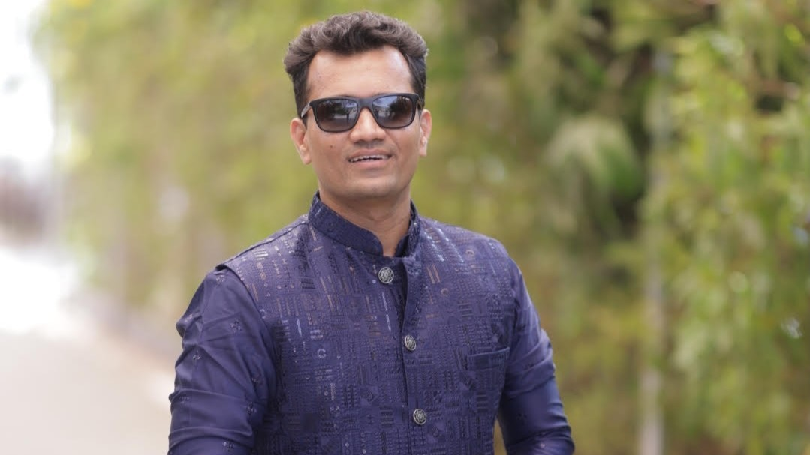

Getting to Know Kunal

I strongly believe that with everyone's participation, cooperation and collective efforts, we can make our society a better and more organised place. : Kunal SuryawanshiA Small Introduction
Tell us a little about yourself. Where are you originally from? What brought you to Pune?
I am Kunal Suryawanshi, a resident of R3 E-wing, originally hail from Latur, Maharashtra. I came to Pune for education in 2007.
What do you do professionally?
I am currently working in the service sector.
Tell us a little about your family. Who all are part of the Kunal family?
In my family, my wife's name is Anjali, my daughter is Anyaka, my father is Baldev, and my mother is Pushpa. Hum 5 ki Happy Family! 🙂
What does a typical weekend look like for your family?
Our weekends are usually spent trekking, going out for outings, and enjoying chit-chat sessions with friends.
Any travel memories or fun stories you'd like to share?
Last September, in 2026, we went to Goa. It was a very nice experience.
What are some of your hobbies or interests outside work?
I love playing volleyball, tennis and badminton, trekking, and swimming in the open waters of Kasarsai Dam.
Your Society Connect
How long have you been living in our society, and what made you choose this place?
I have been living in the society for the last three and a half years. We chose Life Republic and R3 because it is an overall well-developed society, full of greenery, with spacious roads and a lovely evening atmosphere. We are very happy to live here.
What has your experience been like living here?
My experience has been wonderful so far. I am very happy to be a part of this society.
You're quite active on our society WhatsApp group! What keeps you so involved?
I like staying connected with fellow residents and getting to know each other better. Also, whenever any problems arise, I believe we should come together and find solutions.
What do you think makes a society more than just a collection of apartments and turns it into a community?
According to me, we humans are social animals, so we need to live socially. I request all society members to actively participate in every social event that takes place in the society. This will help our next generation learn how our festivals are celebrated.
Participating in social events and sports also helps reduce stress and depression.
The Initiative Taker!
You took the initiative to coordinate with the Viega team to get the flush leakage issues resolved. What prompted you to step in?
We have all been facing this flush issue for the last two years. In every flat, there are elderly people and small children, making it very difficult to pick up a bucket and pour water into the commode.
I felt their pain and decided that this issue should be resolved permanently.
Then, I planned to create floor-wise WhatsApp groups so that we could understand the exact situation. I called the senior manager of Viega and made a plan. I also got in touch with our society manager and plumber to ensure that the flush tanks were filled with sufficient water.
Now, we have won half the battle, and we still need to win the remaining half of the flush issue. I am happy that I received a very good response from our E-Wing members, and together, we overcame the issue.
Was it a smooth experience, or did it involve a lot of follow-ups and chasing?
It involved a lot of follow-ups and coordination. On some days, I had to call 10 to 12 different people and regularly share updates on WhatsApp to keep things moving.
Do you generally enjoy taking up such community-related initiatives?
Yes, absolutely! I enjoy taking up such initiatives because, during the journey, I get an opportunity to connect with new people and get to know them better.
What do you think residents can do to make our society a better and more organised place?
Yes, definitely! I strongly believe that with everyone's participation, cooperation and collective efforts, we can make our society a better and more organised place.
A Little Fun!
If you could plan one event or activity for the entire society, what would it be?
I would love to organise sports tournaments, singing and dancing events, and blood donation camps for our society members.
What's one thing you absolutely love about our society?
I love the area, with so many trees, big roads, and no honking. I love the fresh air!
If you could change one thing about our society, what would it be?
I would like to see improvements in our society's security arrangements. 🚨
What's something about you that most of your neighbours probably don't know?
I am an open book! 😂 There isn't much about me that I would hide.
Any message you'd like to share with fellow residents?
Live happily, take the initiative in every cultural event, and stay connected with each other.